<div class="middle center"> <div style="width: 100%"> <img src="assets/bjtu_logo.PNG" alt="RNN Overview" style="width: 500px;"/> # RNN算法综述 <hr/> 22231301 杨龙澧 计科2206 <div style="text-align: right; font-size: 24pt;"> <div style="width: 90%"> 2024.10.4 </div> </div> </div> </div> <!--v--> <div style="width: 100%"> # 目录 <hr class="blue-line"> 1. 定义概念 2. 算法介绍 3. 算法比较 4. 应用实例 5. 学习心得 5. 参考文献 </div> <!--s--> <div class="middle center"> <div style="width: 100%"> # Part.1 什么是RNN </div> </div> </section> <!--v--> ## RNN诞生历史 ``` Simple -> LSTM -> GRU -> Attention -> Transformer ``` - 1982年：**Hopfield**网络被提出，作为一个最基础的模型。 - 1991年：**LSTM**网络被提出，有效地解决了长序列中的梯度问题 - 2014年：**GRU**作为LSTM的简化版本被提出； - 同年Cho等人提出了**Seq2Seq**架构。 - 2015年，**Attention**机制被提出。 - 2017年，基于自注意力机制的**Transformer**模型被提出， <!--v--> 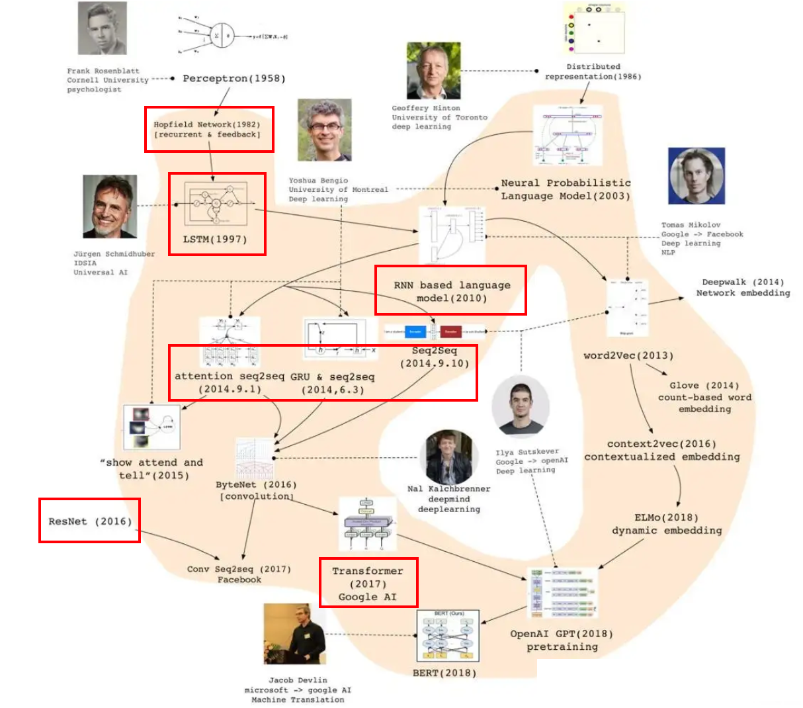 <!--v--> ## 什么是RNN？ 循环神经网络（Recurrent Neural Network, RNN）是一种深度学习模型，专门用于处理序列数据，如时间序列、自然语言或任何形式的有序数据，它在处理序列数据时具有独特的优势。 - **单个循环元** - 循环单元：RNN的核心是循环单元，它能够保存信息并在序列的不同时间步之间传递。 - **网络结构** - 输入层(x<sub>t</sub>)：接收序列数据的一个时间步 - 隐藏层(h<sub>t</sub>)：包含循环单元，负责处理输入并保存状态信息 - 输出层(y<sub>t</sub>)：根据当前时间步的输入和隐藏层的状态输出结果 <!--v--> ## RNN结构 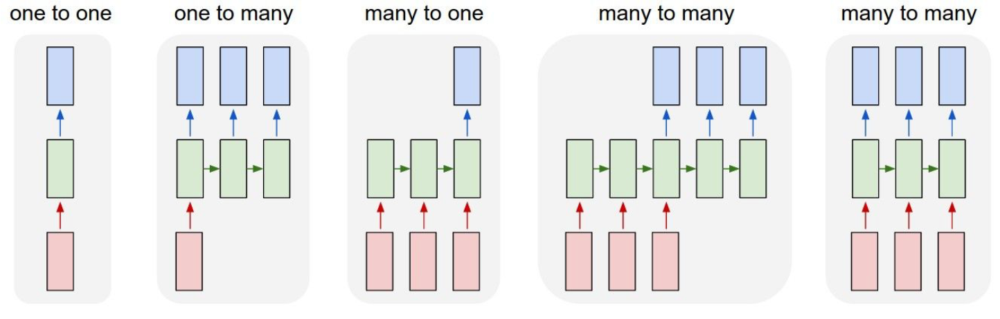 ### one-to-one 输入是x，经过变换Wx+b和激活函数f得到输出y。 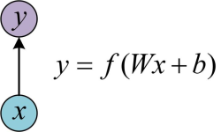 <!--v--> ### n-to-n 最经典的RNN结构：输入是x<sub>1</sub>, x<sub>2</sub>, …, x<sub>n</sub>，输出为y<sub>1</sub>, y<sub>2</sub>, …, y<sub>n</sub>，也就是说，输入和输出序列必须要是等长的。 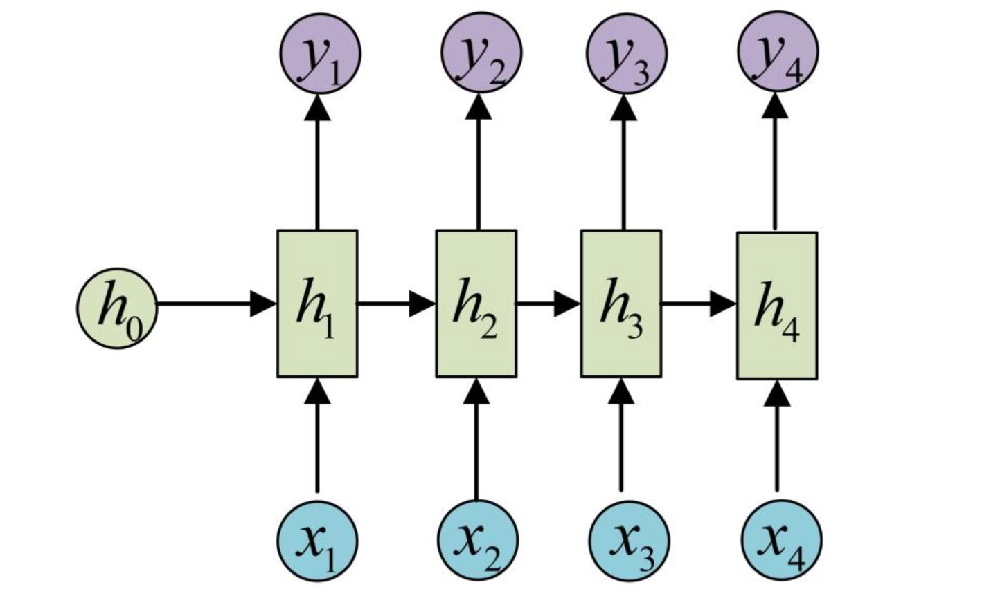 一个箭头就表示对对应的向量做一次类似于f(Wx+b)的变换，这里的这个箭头就表示对h1进行一次变换，得到输出y1。 <!--s--> <div class="middle center"> <div style="width: 100%"> # Part.2 RNN算法概览 </div> </div> </section> <!--v--> ## 工作原理 RNN的核心在于其<mark>循环连接</mark>，这允许网络在每个时间步更新其隐藏状态，并将其传递到下一个时间步。 这种结构赋予RNN“**记忆**”能力，使其能够捕捉**序列中的时间依赖关系**。 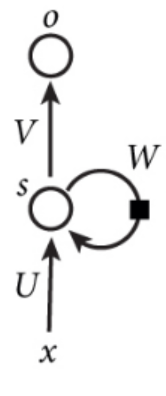 <!--v--> ## 循环连接 <div class="mul-cols"> <div class="col"> 将上图展开来看就得到： 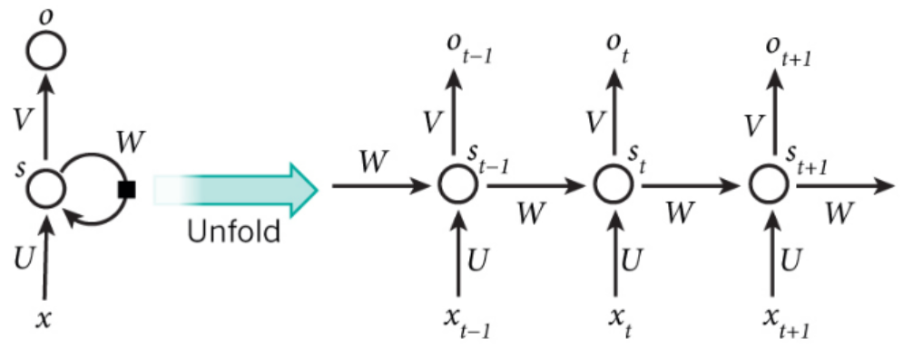 W —— 每个时间点之间的权重矩阵; U —— 是输入层到隐藏层的参数矩阵; V —— 是隐藏层到输出层的参数矩阵. </div> <div class="col"> 对于 I miss you 这句话，在**命名实体识别**中： 左图中： - X<sub>t-1</sub>代表的就是I这个单词的向量 - X<sub>t</sub>代表的是miss这个单词的向量 - X<sub>t+1</sub>代表的是you这个单词的向量，以此类推。 </div> <!--v--> ## 前向传播 在RNN的前向传播过程中会反复执行： 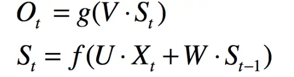 其中Ot代表t时刻的输出,St代表t时刻的隐藏层的值。 St的值不仅由Xt决定，还由S{t-1}决定。 即分别计算当前时间点的**输出值**和**隐藏层的状态**，引入下列变量： - 循环权重（W<sub>h</sub>）：这些权重用于将前一个时间步的隐藏状态传递到当前时间步。 - 输入权重（W<sub>x</sub>）：用于将当前时间步的输入传递到隐藏层。 <!--v--> 前向传播的公式可以详细表述为： 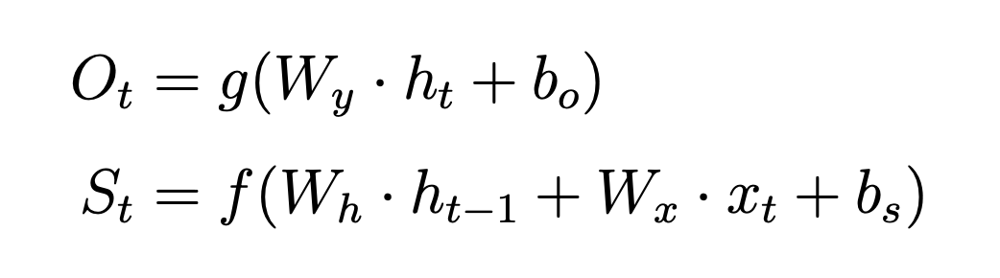 其中bo是输出层的偏置项,bs是隐藏层的偏置项。 f 是激活函数，如tanh或ReLU。 g 是输出层的激活函数，如softmax对于分类任务。 <hr/> ### 反向传播 RNN的训练涉及反向传播算法，但由于循环结构，这个过程被称为通过时间的反向传播（BPTT），通常用于更新网络的权重。 <!--v--> 一个简单的RNN模型实例 ```python # 定义RNN模型 class SimpleRNN(nn.Module): def __init__(self, input_size, hidden_size, output_size): super(SimpleRNN, self).__init__() self.hidden_size = hidden_size # 定义一个RNN层 self.rnn = nn.RNN(input_size, hidden_size) # 定义一个全连接层 self.linear = nn.Linear(hidden_size, output_size) def forward(self, input_seq): # 初始化隐藏状态 hidden = torch.zeros(1, input_seq.size(1), self.hidden_size) # 通过RNN层 rnn_out, hidden = self.rnn(input_seq, hidden) # 通过全连接层 output = self.linear(rnn_out) return output, hidden ``` <!--s--> <div class="middle center"> <div style="width: 100%"> # Part.3 实现流程 </div> </div> <!--v--> <!--s--> <div class="middle center"> <div style="width: 100%"> # Part.4 应用实例 </div> </div> <!--v--> ## RNN的应用领域 <div class="mul-cols"> <div class="col"> #### 机器翻译 <svg style="display: block; margin-left: auto; margin-right: auto;" t="1728703560252" class="icon" viewBox="0 0 1024 1024" version="1.1" xmlns="http://www.w3.org/2000/svg" p-id="5725" width="64" height="64"> <path d="M608 416h288.00000001c35.36 0 63.99999999 28.48000002 63.99999999 64v416.00000001c0 35.36-28.48000002 63.99999999-63.99999999 63.99999999H480c-35.36 0-63.99999999-28.48000002-64-64.00000001v-287.99999999H127.99999999c-35.36 0-63.99999999-28.48000002-63.99999999-64V127.99999999c0-35.36 28.48000002-63.99999999 64.00000001-63.99999999h415.99999999c35.36 0 63.99999999 28.48000002 64 64.00000001v287.99999999z m0 64v64c0 35.36-28.48000002 63.99999999-64 64h-64v256.032c0 17.664 14.304 31.96800001 31.968 31.96799999H864a31.96800001 31.96800001 0 0 0 31.968-31.96799999V512a31.96800001 31.96800001 0 0 0-31.968-31.96800001H608zM127.99999999 159.968V512c0 17.664 14.304 31.96800001 31.96800001 31.96800001H512a31.96800001 31.96800001 0 0 0 31.96800001-31.96800001V160A31.96800001 31.96800001 0 0 0 512.032 127.99999999H160A31.96800001 31.96800001 0 0 0 127.99999999 159.968z m64.00000001 244.288V243.36h112.736V176h46.752c6.4 0.928 9.63200001 1.824 9.632 2.75200001a10.56000001 10.56000001 0 0 1-1.37600001 4.12799998c-2.75200001 7.328-4.128 16.032-4.12799999 26.11200001v34.368h119.648v156.768h-50.88000001v-20.64000001h-68.76799999v118.27200002H306.11199999v-118.27200002H238.752v24.76800001H192z m46.72-122.36800001v60.48000001h67.39200001V281.91999999H238.752z m185.66400001 60.48000001V281.91999999h-68.76800001v60.48000001h68.76799999z m203.83999999 488H575.99999999L668.128 575.99999999h64.64l89.344 254.40000002h-54.976l-19.264-53.66400001h-100.38399999l-19.23200001 53.632z m33.024-96.256h72.864l-34.368-108.608h-1.376l-37.12 108.608zM896.00000001 320h-64.00000001a128.00000001 128.00000001 0 0 0-128-128V127.99999999a192 192 0 0 1 191.99999999 192.00000001zM127.99999999 704h64.00000001a128.00000001 128.00000001 0 0 0 128 128v64.00000001a192 192 0 0 1-191.99999999-192.00000001z" fill="#333333" p-id="5726"></path> </svg> RNN 编码器-解码器架构 - 编码器 处理源语言文本并生成上下文向量 - 解码器 基于此向量生成目标语言文本 编码器 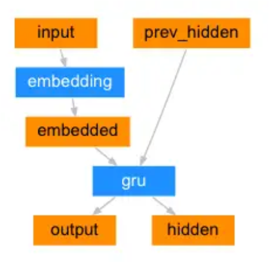 </div> <div class="col"> 一个机器翻译模型的工作机制： 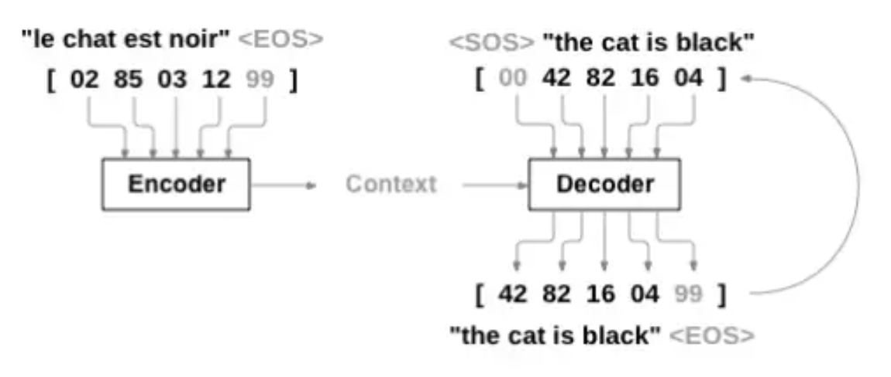 译码器 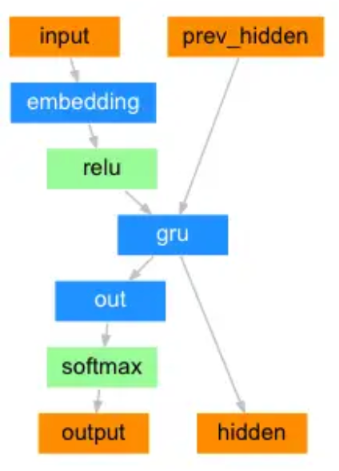 </div> <!--v--> <div class="mul-cols"> <div class="col"> #### 生成图像描述 <svg style="display: block; margin-left: auto; margin-right: auto;" t="1728703484058" class="icon" viewBox="0 0 1024 1024" version="1.1" xmlns="http://www.w3.org/2000/svg" p-id="4676" width="64" height="64"> <path d="M859.648 159.744l-36.352-12.8c-4.096-23.552-25.6-42.496-51.2-42.496-29.696 0-53.248 23.552-53.248 53.248s23.552 53.248 53.248 53.248c14.848 0 25.6-6.144 36.352-14.848l29.696 12.8c23.552 8.704 38.4 38.4 38.4 66.048v473.6c0 27.648-14.848 57.344-38.4 66.048l-27.648 10.752c-10.752-10.752-23.552-16.896-38.4-16.896-29.696 0-53.248 23.552-53.248 53.248s23.552 53.248 53.248 53.248c23.552 0 42.496-14.848 51.2-36.352l38.4-12.8c45.056-14.848 78.848-66.048 78.848-115.2V275.456c-2.048-49.152-35.84-100.352-80.896-115.712zM292.352 808.448c-16.896 0-31.744 8.704-42.496 21.504l-38.4-12.8c-21.504-10.752-40.448-38.4-40.448-61.952V270.848c0-23.552 19.456-51.2 40.448-59.904l42.496-14.848c10.752 10.752 23.552 16.896 38.4 16.896 29.696 0 53.248-23.552 53.248-53.248s-23.552-53.248-53.248-53.248c-23.552 0-45.056 14.848-51.2 36.352l-53.248 16.896c-42.496 14.848-80.896 64-80.896 111.104v486.4c0 47.104 38.4 93.696 83.456 111.104l51.2 16.896c8.704 19.456 27.648 31.744 49.152 31.744 29.696 0 53.248-23.552 53.248-53.248 1.536-31.744-22.016-55.296-51.712-55.296z m125.952-388.096c0 23.552 18.944 42.496 42.496 42.496s42.496-18.944 42.496-42.496c0-23.552-18.944-42.496-42.496-42.496-23.552-0.512-42.496 18.944-42.496 42.496z" fill="#2c2c2c" p-id="4677"></path><path d="M669.696 443.904l80.896 78.848 2.048 111.104-396.8-2.048v-66.048l91.648-66.048 89.6 59.904 132.608-115.712z" fill="#2c2c2c" p-id="4678"></path><path d="M627.2 748.544H336.896c-49.152 0-89.6-40.448-89.6-89.6V424.448c0-23.552 19.456-42.496 42.496-42.496h8.704v275.456c0 21.504 16.896 36.352 36.352 36.352h332.8v10.752c2.048 25.088-16.896 44.032-40.448 44.032z" fill="#2c2c2c" p-id="4679"></path><path d="M746.496 676.352h-394.24c-21.504 0-36.352-16.896-36.352-36.352V330.752c0-25.6 21.504-47.104 47.104-47.104h384c25.6 0 47.104 21.504 47.104 47.104v298.496c1.536 25.6-22.016 47.104-47.616 47.104z m-377.344-53.248H742.4V345.6c0-6.144-4.096-10.752-10.752-10.752H379.904c-6.144 0-10.752 4.096-10.752 10.752v277.504z" fill="#2c2c2c" p-id="4680"></path> </svg> 使用CRNN的经典模型 这里采用的是两层各 256 单元的双向 LSTM 网络： 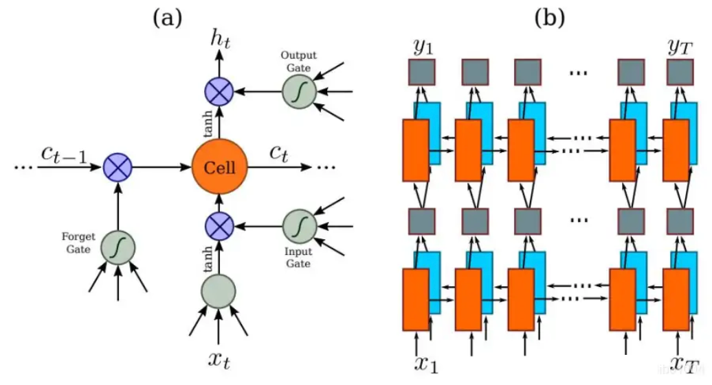 </div> <div class="col"> 一个图像识别的典例： 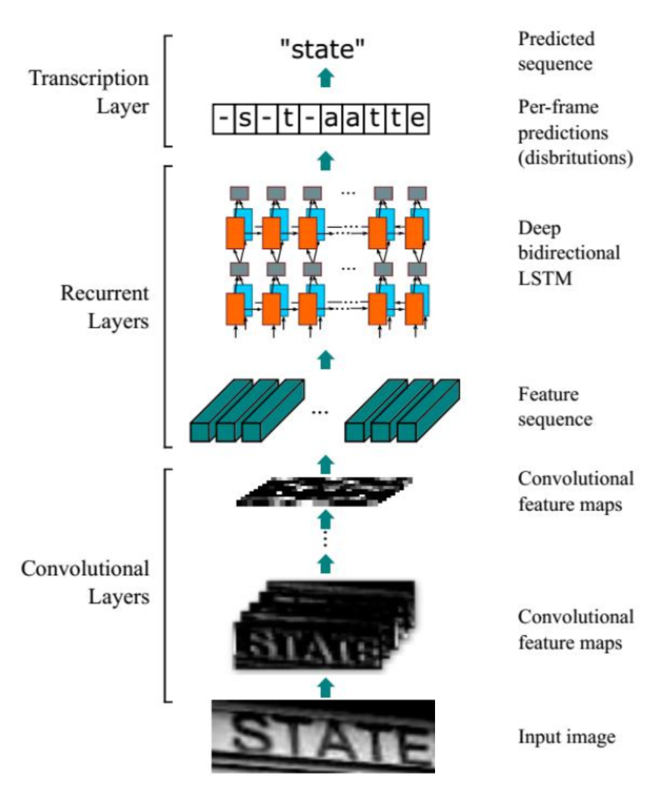 </div> </div> <!--v--> <div class="mul-cols"> <div class="col"> #### 文本处理 <svg style="display: block; margin-left: auto; margin-right: auto;" t="1728703576612" class="icon" viewBox="0 0 1024 1024" version="1.1" xmlns="http://www.w3.org/2000/svg" p-id="7672" width="64" height="64"> <path d="M917.333 73.387h-24.32a55.893 55.893 0 0 1-55.04 34.133H186.027a55.893 55.893 0 0 1-55.04-34.133h-24.32L90.453 332.8h23.467c56.747-198.827 86.613-180.053 349.44-182.613v600.32c-3.84 186.453-31.573 170.666-157.867 179.2v20.906h413.014v-20.906c-128-10.24-154.027 7.253-157.867-179.2v-600.32c262.827 2.56 292.267-16.214 349.44 182.613h23.467z" fill="#2c2c2c" p-id="7673"></path> </svg> - 文本预测 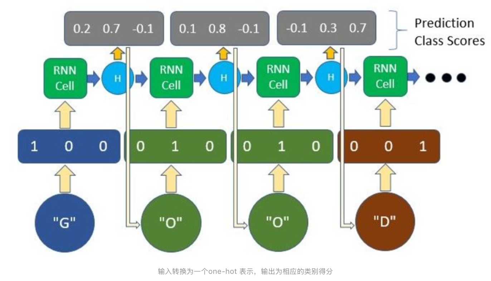 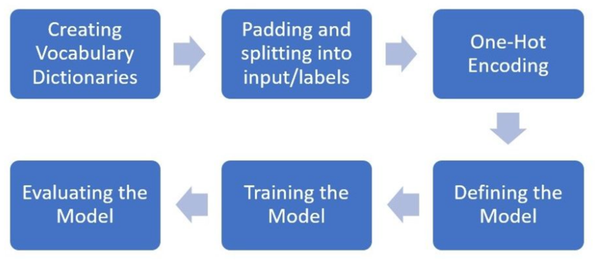 </div> <div class="col"> <hr/> - 文本分类 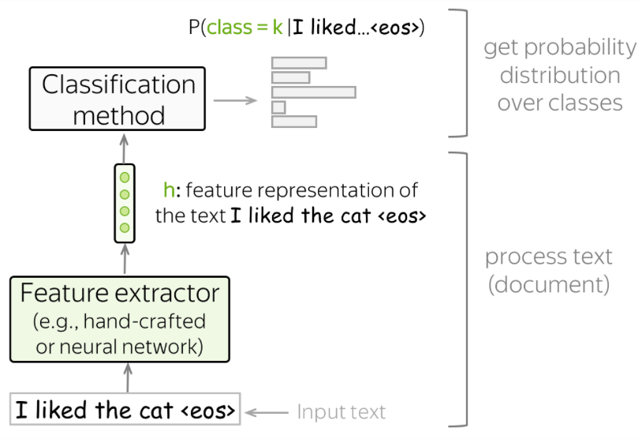 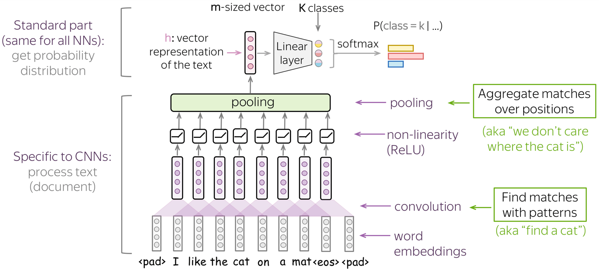 </div> <!--s--> <div class="middle center"> <div style="width: 100%"> # Part.5 算法比较 </div> </div> <!--v--> ## 常见RNN算法比较 <div class="three-line"> |特性| RNN| LSTM| GRU| Transformer| |:--:|:--:|:--:|:--:|:--:| | **优点**| - 适合处理序列数据<br>- 能捕捉时间依赖 | - 解决梯度消失问题<br>- 适合长序列数据 | - 结构简单<br>- 性能同LSTM | - 并行计算能力强<br>- 适合长序列数据 | **缺点**| - 难以捕捉长距离依赖<br>- 梯度消失或爆炸 | - 结构复杂<br>- 计算成本高 | - 长期记忆能力不如LSTM | - 计算成本高<br>- 长序列敏感 | **适用场景**| - NLP<br>- 语音识别 | - 机器翻译<br>- 文本生成 | - 需要处理序列数据但计算资源有限 | - 机器翻译<br>- 长文本处理 </div> <!--v--> ## 与其他算法比较 <div class="three-line"> | 特性 | RNN | CNN | SVM | DT | KNN | |------|-----|-----|-----|---------------|------| | **优点** | 序列数据 | 空间特征 | 高维数据 | 易于解释 | 实现简单 | | **缺点** | 长距离依赖难 | 非序列数据 | 大规模数据慢 | 容易过拟合 | 计算成本高 | | **适用场景** | NLP | 图像处理 | 图像文本 | 规则提取 | 分类回归 | | **训练方式** | 时间步训练 | 批处理 | 批处理 | 递归分割 | 批处理/在线 | | **参数效率** | 低 | 高 | 中等 | 高 | 低 | | **并行能力** | 低 | 高 | 高 | 高 | 高 | </div> <!--s--> <div class="middle center"> <div style="width: 100%"> # Part.6 学习心得 </div> </div> <!--s--> <div class="middle center"> <div style="width: 100%"> # 参考文献 </div> </div> <!--v--> - [TonyCrane](https://github.com/TonyCrane) - [Lena Voita's Blog of TextClassification](https://lena-voita.github.io/nlp_course/text_classification.html#main_content) - -